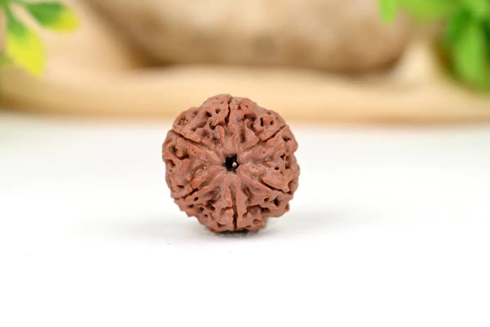
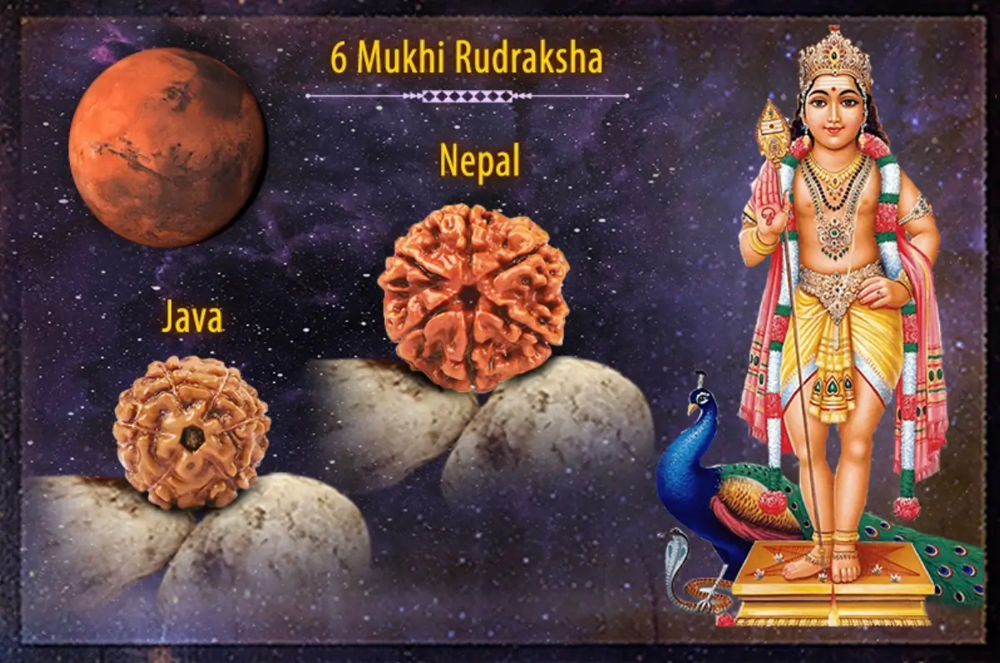

Hạt Rudraksha 6 Mukhi hay còn được gọi là “Chah Mukhi Rudraksha” là một trong những hạt tốt lành và mạnh mẽ.
Mang lại sự ổn định trong mọi khía cạnh của cuộc sống. Người đeo hạt cảm nhận được sự tập trung, bình tĩnh đưa ra những quyết định thích hợp và linh hoạt. Nó giúp loại bỏ những tác động của những năng lượng tiêu cực.
Chah Mukhi Rudraksha có 6 mặt, tượng trưng cho 6 giác quan của con người: mắt, tai, mũi, lưỡi, thân và ý thức. Hỗ trợ mang lại sự cân bằng và hòa hợp cho người đeo, giúp họ kiểm soát tốt các giác quan của mình.
Ngoài ra, trong tôn giáo Ấn Độ hạt Chah Mukhi Rudraksha còn được coi biểu tượng của thần Kartikeya, con trai của thần Shiva và Parvati mang lại sự may mắn, thành công và thịnh vượng.
Đeo Rudraksha 6 Mukhi giúp một cá nhân có thể đứng vững và đối mặt với khó khăn mà không hề sợ hãi và vượt qua chúng.
Tăng cường sự tự tin và quyết tâm
Chah Mukhi Rudraksha được cho là mang lại sự cân bằng và hòa hợp cho người đeo, giúp họ kiểm soát tốt các giác quan của mình.
Khi các giác quan được kiểm soát tốt, người ta sẽ có thể tập trung và suy nghĩ rõ ràng hơn. Điều này có thể giúp họ đưa ra quyết định sáng suốt và tự tin hơn vào bản thân.
Cải thiện khả năng tập trung và ghi nhớ
Hạt Rudraksha này có chứa năng lượng tích cực. Năng lượng này có thể giúp người đeo loại bỏ căng thẳng và lo lắng, từ đó nâng cao tinh thần và sự tự tin. Khi họ có tinh thần và sự tự tin cao hơn có thể giúp người đeo tập trung và ghi nhớ tốt hơn.
Giảm căng thẳng và lo lắng
Căng thẳng và lo lắng có thể khiến người ta cảm thấy tự ti và mất quyết tâm. Việc đeo hạt Rudraksha 6 Mukhi có thể giúp người đeo loại bỏ căng thẳng và lo lắng, từ đó nâng cao tinh thần và sự tự tin.
Tăng cường sức khỏe thể chất và tinh thần
Hạt Rudraksha 6 Mukhi có thể giúp cải thiện sức khỏe thể chất và tinh thần của người đeo. Nó hỗ trợ điều hòa huyết áp, giảm đau đầu và cải thiện giấc ngủ.
Bảo vệ khỏi những điều tiêu cực
Hạt Rudraksha 6 Mukhi được tin rằng có thể xua tan các nguồn năng lượng tiêu cực và bảo vệ người đeo khỏi những tổn hại về thể chất lẫn tinh thần.
Cách đeo hạt Chah Mukhi Rudraksha cũng rất quan trọng. Theo truyền thống, hạt Rudraksha 6 Mukhi nên được đeo ở cổ, ngay bên dưới cằm. Người đeo nên đeo hạt Rudraksha bên trái, hoặc có thể đeo cả hai bên.
Khi đeo hạt này, người đeo nên giữ cho hạt luôn sạch sẽ và được bảo vệ. Hạt Rudraksha nên được rửa sạch bằng nước ấm và muối tinh mỗi ngày. Người đeo cũng nên tránh để hạt Rudraksha tiếp xúc với các chất hóa học hoặc các vật liệu có thể làm hỏng hạt.
Hạt Rudraksha 6 Mukhi này phù hợp nhất cho các nhà báo, biên tập viên, sinh viên, chính trị gia, và các nhà quản lý. Người đeo sẽ nhận thấy một sự cải thiện đáng kể về mức năng lượng, sự tự tin, tiện nghi vật chất và niềm vui thế gian.
Hạt Rudraksha 6 Mukhi là một trong những loại hạt phổ biến và nhiều người sử dụng thường xuyên nhất trên trị trường. Nhiều người đã đeo hạt này đã trải nghiệm được sự tích cực mang lại nhiều lợi ích và chữa lành.
Giá của loại hạt Rudraksha 6 Mukhi thường từ 20$ - 50 $ cho một hạt tùy thuộc vào kích thước và nguồn gốc của hạt. Nếu bạn đang tìm kiếm một loại Rudraksha có thể giúp bạn tăng cường sự tự tin, quyết tâm, và cải thiện sức khỏe thể chất và tinh thần, thì hạt Rudraksha này là một lựa chọn tuyệt vời.